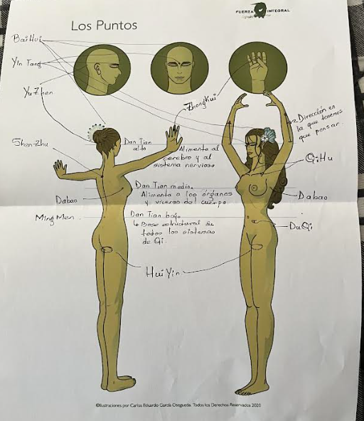

El ZhiNeng Qigong es una ciencia avalada por el Buró Nacional de Ciencias, el
gobierno chino y el Ministerio de Salud Pública.
Es una ciencia milenaria y es una práctica que nos enseña a manejar el Qi. Todos
sus movimientos tienen por objetivo ayudar a que el Qi se mueva de manera más
eficiente en nuestro cuerpo.
El entrenamiento está diseñado para mejorar la salud física, mental y emocional,
pues todo lo que hacemos desequilibra el Qi. La única práctica correcta para
equilibrar el Qi es el Qigong.
Todos los deportes desequilibran nuestro Qi.
Zhi 智 (Sabiduría)
Sabiduría ≠ inteligencia.
La sabiduría tiene que ver con la paz que se experimenta en la vida, con la
felicidad que podemos alcanzar en nuestra existencia.
La sabiduría está en relación directa de estar bien.
Todos buscamos estar bien: plenos, libres y felices.
La sabiduría no se aprende, es algo que se despierta, porque está
dentro de nosotros.
"Nosotros somos sabiduría".
La sabiduría no consiste en saber mucho, sino en saber dar a las cosas la
importancia que merecen.
Es una voz, pero para poder escucharla debemos guardar
silencio.
Cuando la sabiduría del cuerpo despierta, el cuerpo sana.
Cuando la sabiduría de las emociones despierta, entonces alcanzamos la
paz.
Cuando la sabiduría de la mente despierta, huimos de la ignorancia, la ilusión
y la fantasía, que son los tres aspectos que más nos pueden dañar en la
vida.
El cuerpo es un mecanismo de frecuencias. Cada célula, tejido,
átomo de nuestro cuerpo vibra en una frecuencia específica.
Cuando enfermamos, hay una frecuencia que ha salido de
armonía; normalmente no está vibrando con la intensidad con la que
debería estar vibrando. Entonces consumimos medicamentos, que son sustancias
químicas que deberían ayudarnos a equilibrar nuestras frecuencias, pero no
existe tecnología que permita llevar a nuestro cuerpo solo las frecuencias que
necesita; por esa razón hay efectos secundarios.
A través del cultivo correcto del silencio, cuando practicamos ZhiNeng Qigong, llegamos a despertar esa información y a equilibrar nuestras
frecuencias, y eso se refleja a niveles químicos.
Desde la paz, todo aquello que es importante puede florecer.
En el ZhiNeng Qigong se hace énfasis en: desde la paz, todo lo demás.
Zhi: despertar de la sabiduría en nuestro cuerpo, mente y
emociones.
Neng 能 (Talento)
ZhiNeng 智能.
"Todos somos sabios, unos antes que otros".
Todos tenemos el talento de despertar nuestra sabiduría.
Qi 气
Qi: es la fuerza-sustancia que forma todo en el universo, tanto la
materia como la energía.
El Qi es el nivel más esencial y sutil de todo cuanto existe.
Practicamos ZhiNeng Qigong para saber quiénes somos, para convertirnos en
mejores personas y para hacer un mejor servicio.
Practicamos para ser mejores.
Dos aspectos a considerar cuando hablamos de Qi:
La cantidad en la que el Qi se reúne.
La forma en la que el Qi se comporta.
Necesitamos reunir suficiente Qi y luego convertirlo en cualidad,
información o característica, frecuencia o vibración.
Las formas dan esencia a las cosas.
Gong 功
Gong: trabajo, esfuerzo, realizado con el corazón, comprometido con la
excelencia, hasta alcanzar un alto nivel de energía.
Qigong
Qigong: trabajar con nuestro Qi.
El Qi en nuestro cuerpo se comporta diferente de acuerdo a nuestras
posturas.
Los movimientos estimulan el Qi.
Los sonidos estimulan diferentes frecuencias en nuestro
cuerpo.
Nada tiene un efecto más potente y más directo en el comportamiento de
nuestro Qi que el comportamiento de nuestra mente.
Busca responder a nuestras preguntas más fundamentales a través del silencio,
buscando hacia adentro.
ZhiNeng Qigong
"Trabajar con nuestro Qi para despertar nuestra sabiduría".
Antecedentes históricos y anatomía sutil
Debemos hacer las cosas tal y como se indican.
Todo lo que hacemos mueve Qi.
Si lo que hacemos, lo hacemos bien, entonces hay beneficios.
Diferencias con otras formas de Qigong
Sencillez.
Efectividad.
El ZhiNeng Qigong no se basa o centra en la enfermedad, se centra en
los mecanismos que necesita el cuerpo para despertar su sabiduría.
El nivel de efectividad depende del tiempo, talento y
constancia.
"No hay manera de que practicando ZhiNeng Qigong no cambies".
Cuanto más tiempo lo hagamos, más hábiles nos volvemos.
El ZhiNeng Qigong no es magia ni una panacea. Es una herramienta que
nos va a permitir vivir con más gracia y más sabiduría. Cuando es momento de
partir, mejora la partida y la calidad de vida de quienes se quedan.
Debemos ser perseverantes independientemente de lo que hayamos
logrado.
Seguridad. No puede pasar nada malo practicando ZhiNeng Qigong.
Profundidad y alcances.
Pang Ming fue el creador de la teoría y la práctica del ZhiNeng Qigong.
El ZhiNeng Qigong también ofrece un impacto económico: se reducen
accidentes.
Cuantas más personas se reúnan a practicar ZhiNeng Qigong, se forma una gran
sinergia.
El ZhiNeng Qigong no requiere diagnóstico.
Anatomía del Qi
Tenemos dos sistemas:
Interno.
Externo.
Sistema interno de Qi
Canales o meridianos. Es por donde fluye el Qi.
El Qi fluye a través de nuestro cuerpo por medio de los meridianos, por lo que
estos deben estar abiertos.
Existen muchas razones por las que un meridiano no está abierto.
Dan Tian
Órganos sabios sutiles.Sus funciones son: absorber,
procesar y distribuir el Qi lo mejor posible.
Los Dan Tian van a hacer lo mejor que puedan con lo que tengan. Si nosotros
logramos nutrirlos lo suficiente y de lo adecuado, ellos van a hacer llegar la
información a donde tiene que llegar, con la potencia con la que tiene que
llegar, donde la sabiduría del cuerpo despierta.
Hay tres Dan Tian:
El Dan Tian bajo. Alimenta todo lo que da estructura a
nuestro cuerpo:
Esqueleto.
Musculatura.
Ligamentos.
Tendones.
En este Dan Tian nos relacionamos con el aspecto material de la condición
humana.
El Dan Tian medio. En este Dan Tian nos relacionamos con el
aspecto emocional de la condición humana.
El Dan Tian alto. En este Dan Tian nos relacionamos con el
aspecto mental de la condición humana.
El ser humano está constituido por un cuerpo, por una capacidad de
experimentar emociones y sentimientos, y por una mente capaz de concebir su
propia realidad.
En ZhiNeng Qigong, mientras más vamos para arriba, más debemos
arraigarnos hacia abajo.
Cuando el Qi se trabaja, tiende a subir.
El Qi debe verterse en el Dan Tian bajo.
Sistema externo
El campo. Todo cuerpo tiene un campo.
"Mi campo es el Qi que rodea a mi cuerpo y que vibra en mis
frecuencias".
A través del campo, el Qi del exterior se empieza a reunir y forma
cuerpo.
El cuerpo es el centro de nuestro campo. A través de nuestro campo, el
Qi de nuestro cuerpo que ya cumplió con su función también empieza a salir de
los sistemas y a dejar de formar parte de nosotros.
El Qi entra y sale de todos los seres vivos.
Cuando practicamos ZhiNeng Qigong, esta entrada y salida de Qi ocurre
con mayor eficiencia, y es lo que permite que nuestro cuerpo logre alcanzar
metas de salud en poco tiempo, como:
Cicatrización de huesos.
Cicatrización de piel.
Nosotros tenemos un mecanismo de sustitución celular, y el órgano con mayor
sustitución celular es el hígado.
"Todo cuerpo tiene un campo, cada átomo de tu cuerpo tiene un campo,
cada molécula de tu cuerpo tiene un campo, cada célula de tu cuerpo tiene un
campo, cada órgano de tu cuerpo tiene un campo, tú tienes un campo, tú y yo
tenemos un campo, todos los que estamos viviendo esta experiencia tenemos un
campo".
En algún momento, sin importar la razón, puede ser que alguna parte de tu
cuerpo esté enferma y no haya habido un mecanismo que modifique esa información;
entonces no importa cuántas veces el órgano se renueve.
Lo que debemos hacer es renovar el Qi que está en el campo de ese
órgano.
Que el Qi vibre en una frecuencia de un órgano saludable.
Es más fácil organizar el Qi en el campo.
Los puntos
Bai Hui: es la coronilla.
Yin Tang: es el punto en medio de las cejas.
Yu Zhen: es la parte posterior del cráneo.
Shen Zhu: es el tercer espacio intervertebral dorsal.
Qi Hu: justo debajo del centro de la clavícula.
Da Bao: punto entre dos costillas, debajo de nuestras axilas, a la altura
original del pezón.
Du Qi: ombligo.
Ming Men: punto en la espalda, detrás del ombligo.
Hui Yin: músculos de contención del ano, la uretra y la vagina.
Zhong Kui: es el centro de la falange media del dedo medio.
Los puntos y los tres Dan Tian · lámina propia de Mi Universo

Los Puntos · Ilustraciones por Carlos Eduardo García Oseguera